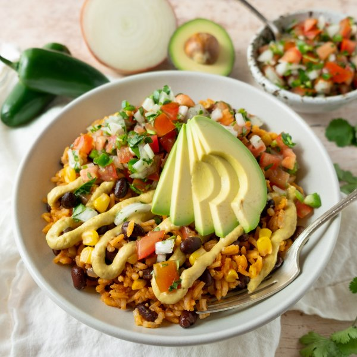

Cheesy Vegan Burrito Bowl with Spanish Rice, Beans & Pico de Gallo

Prep Time
35 min
Nutrition (per serving)
686.3 kcalCalories
23.5 gProtein
109.7 gCarbs
19.3 gFat
Full nutrition table
| Calories | 686.3 kcal |
| Total fat | 19.3 g |
| Saturated fat | 2.7 g |
| Trans fat | 0 g |
| Cholesterol | 0 mg |
| Sodium | 552 mg |
| Carbohydrates | 109.7 g |
| Fiber | 23.5 g |
| Sugars | 7.4 g |
| Protein | 23.5 g |
| Potassium | 1399 mg |
| Calcium | 222.9 mg |
| Iron | 8.1 mg |
| Vitamin A | 924.1 IU |
| Vitamin C | 36.2 mg |
| Vitamin D | 13.5 IU |
Cookware
Ingredients
- 4 fl ozalmond milk, unsweetened
- 1avocado
- 1 ⅓ cupsbasmati rice
- 2 (15 oz) cansblack beans
- 1 small bunchcilantro
- 1 cupfrozen corn
- 2 clovesgarlic
- 1jalapeño pepper
- 1lime
- ¼ cupnutritional yeast flakes
- 2tomatoes
- 1 (8 oz) cantomato sauce
- 1 mediumyellow onion
- arrowroot starch/powder
- chili powder
- cumin, ground
- Dijon mustard
- extra virgin olive oil
- garlic powder
- onion powder
- salt
Steps
- Peel and small dice onion. Place half in a medium bowl and set aside for the pico de gallo.1 medium yellow onion
- Peel and mince garlic.2 cloves garlic
- Preheat a large pot over medium-high heat.
- Once the pot is hot, add oil and swirl to coat the bottom. Add rice, onion, and spices; cook, stirring constantly, until onions are soft and rice is golden and toasted (you should hear a slight sizzle and pop from the rice), about 4 minutes.4 tsp extra virgin olive oil
1 ⅓ cups basmati rice
1 tsp chili powder
½ tsp cumin - Add garlic, water, corn, tomato sauce, and salt to the pot and bring to a boil over high heat. Once the liquid comes to a boil, stir, cover, and reduce the heat to low. Cook the rice until liquid is fully absorbed, 18-20 minutes.3 cup water
1 cup frozen corn
1 (8 oz) can tomato sauce
1 tsp salt - Meanwhile, wash and dry the fresh produce.1 lime
1 jalapeño pepper
2 tomatoes
1 small bunch cilantro
1 avocado - Juice lime into the bowl with the onion.
- Quarter jalapeño pepper lengthwise; seed and remove ribs of the jalapeño with a spoon. Finely mince and add to the bowl with the onion. (Be careful, with jalapeños, do not touch your eyes and ensure you wash your hands after handling or wear gloves while preparing.)
- Small dice tomatoes. Shave cilantro leaves off the stems; discard the stems and mince the leaves. Add to the bowl along with salt, and stir to combine the pico de gallo. Set aside.½ tsp salt
- In a small saucepan, combine almond milk, oil, nutritional yeast, arrowroot starch, Dijon, onion powder, and garlic powder; whisk until smooth. Place the saucepan over medium heat and cook, whisking constantly, until the sauce becomes thick and stretchy, about 3 minutes. Remove from the heat.4 fl oz (½ cup) almond milk, unsweetened
4 tsp extra virgin olive oil
¼ cup nutritional yeast flakes
2 tsp arrowroot starch/powder
2 tsp Dijon mustard
⅛ tsp onion powder
⅛ tsp garlic powder - Halve and pit the avocado. Slice thinly while still in skin, then scoop out with a spoon.
- Drain and rinse the beans in a colander.2 (15 oz) cans black beans
- When the rice is done, add beans to the pot and stir to combine.
- To serve, divide rice and bean mixture between bowls or plates. Top with pico de gallo, avocado, and cheesy sauce. Enjoy!